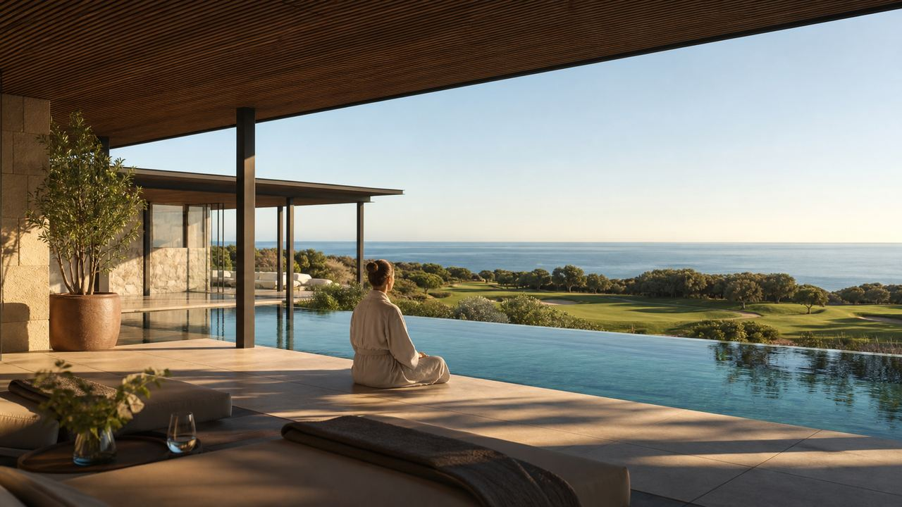
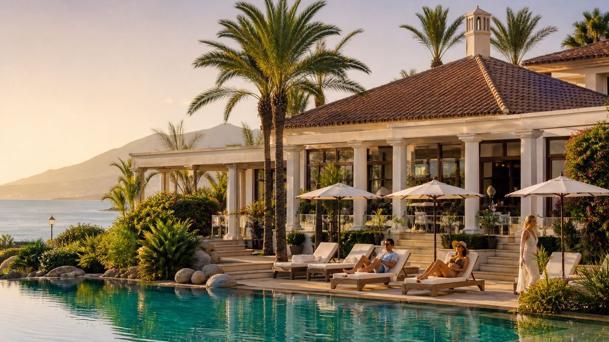
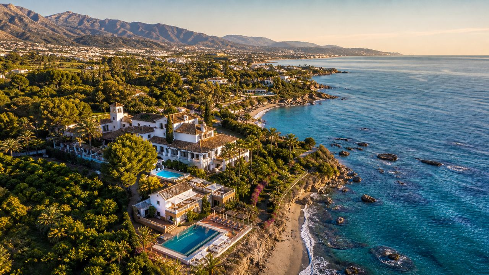
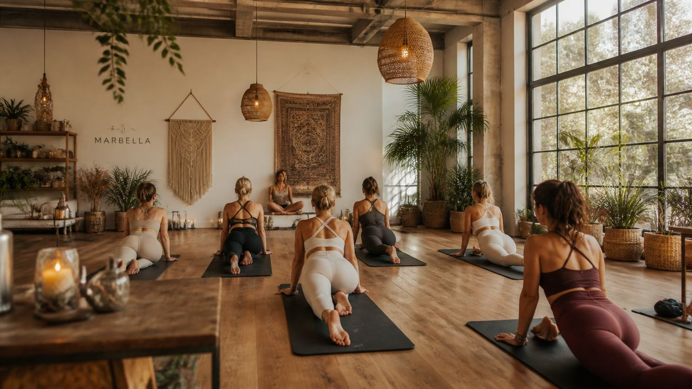
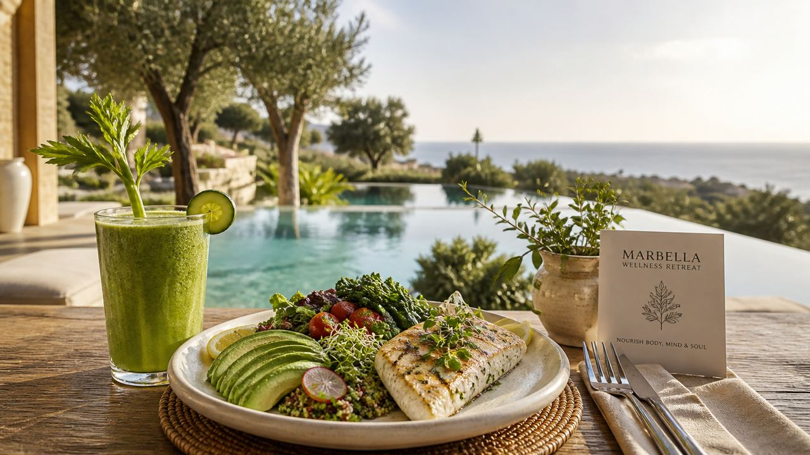
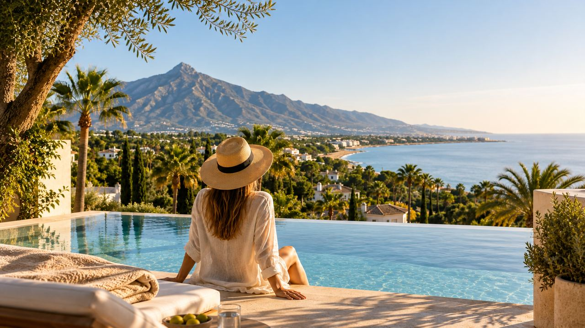

Costa del Sol · Lifestyle
Wellness Retreats in Marbella – Luxury, Detox & Yoga on the Costa del Sol
 By Lucyna Gacek · · updated · 6 min read
By Lucyna Gacek · · updated · 6 min read

In short: Marbella has five well-known places for a wellness break. Shanti-Som is for yoga and a full reset in the hills. Finca Cortesin and the Marbella Club are for luxury spa stays. Boho Club is a lighter option on the Golden Mile. Buchinger Wilhelmi is for medically supervised fasting.
Marbella is known for beach clubs, golf and five-star hotels. Less known is how good it is for slowing down. You get more than 300 sunny days a year, mountains a few minutes from the sea, and Mediterranean food. Here are five places worth knowing, and who each one suits.
Shanti-Som: yoga and detox in the hills

Shanti-Som sits in the hills above the village of Monda, in the Sierra de las Nieves Natural Park, a short drive inland from Marbella. It is small and quiet, with around 15 rooms, so it feels more like a private house than a hotel.
Programmes combine yoga, meditation, healthy food and detox, with treatments and time in nature. It is a good choice if you want to switch off completely for a few days.
Best for: a full reset, stress relief, yoga and meditation.
Finca Cortesin: a luxury spa

Finca Cortesin is a five-star hotel in Casares, between Estepona and Sotogrande, about 40 minutes west of Marbella. Its spa covers around 2,200 m², with a 25-metre heated indoor pool, thermal areas, treatment rooms and a gym.
This is not a strict detox programme. You come to rest, have treatments and enjoy a beautiful hotel at your own pace.
Best for: spa lovers, couples and a relaxing luxury break.
Marbella Club: wellness on the Golden Mile

The Marbella Club is one of the best-known resorts on the Costa del Sol, right on the beach on the Golden Mile. Its wellness offer rests on four pillars: spa, nutrition, fitness and wellbeing. There's a thalassotherapy spa with an indoor seawater pool.
You can book a personal programme with nutrition advice, training and treatments, from a one-day reset to a longer stay. Check exactly which consultations and treatments your package includes before you book.
Best for: a programme with expert guidance, without giving up a beach resort.
Boho Club: a lighter wellness stay

Boho Club is a boutique hotel with around 40 rooms in a botanical garden on the Golden Mile. Its wellness centre, Ashiana, mixes yoga, massage and Eastern healing traditions with modern recovery treatments.
It suits you if you want wellness as part of a holiday, close to Marbella's restaurants, shops and beaches, without the timetable of a full retreat.
Best for: short breaks, yoga and massage, staying close to town.
Buchinger Wilhelmi: medical fasting

Buchinger Wilhelmi has run its fasting clinic in the hills above Marbella since 1973. It is a sister clinic of the original one in Überlingen, on Lake Constance in Germany. Stays are built around fasting programmes with medical check-ups, under the care of doctors and nurses, plus walks, exercise and treatments.
This is a medical stay rather than a spa holiday. Fasting is not suitable for everyone, so talk to your own doctor first and check the clinic's requirements.
Best for: supervised fasting, a health check and long-term lifestyle changes.
Which one suits you?
| Retreat | Where | Style | Best for |
|---|---|---|---|
| Shanti-Som | Hills above Monda | Small retreat | Yoga, detox, full reset |
| Finca Cortesin | Casares | Five-star hotel and spa | Luxury spa break |
| Marbella Club | Golden Mile, on the beach | Beach resort | Guided personal programme |
| Boho Club | Golden Mile | Boutique hotel | Short, flexible wellness |
| Buchinger Wilhelmi | Hills above Marbella | Medical clinic | Supervised fasting |
Before you book, check the programme length, what is included, any health requirements, and whether you stay overnight or visit for the day.
Frequently asked questions
What is the best wellness retreat in Marbella?
It depends on what you want. Shanti-Som suits yoga and a full reset, Finca Cortesin and the Marbella Club suit a luxury spa stay, Boho Club suits a lighter stay on the Golden Mile, and Buchinger Wilhelmi suits medically supervised fasting.
Is a fasting retreat safe for everyone?
No. Fasting is not suitable for everyone. Talk to your own doctor first and check the clinic's medical requirements before you book.
When is the best time for a wellness retreat in Marbella?
Spring and autumn are the most pleasant, with warm days and fewer visitors. Winter is mild enough for outdoor yoga and walks on most days, while July and August are hot and busy.
From a retreat to a home

Many people come to Marbella for a week of rest and leave thinking about spending more of the year here. The climate, the outdoor life and the calm of the hills make that easy to understand. If you are thinking about a home on the Costa del Sol, we are happy to help, with no commission for the buyer.